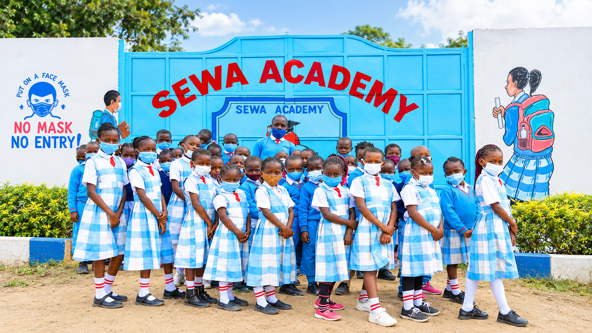
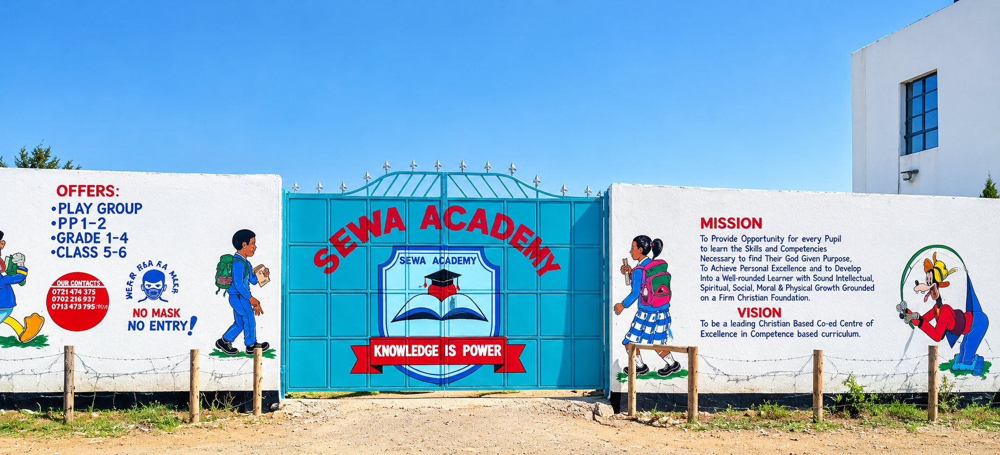
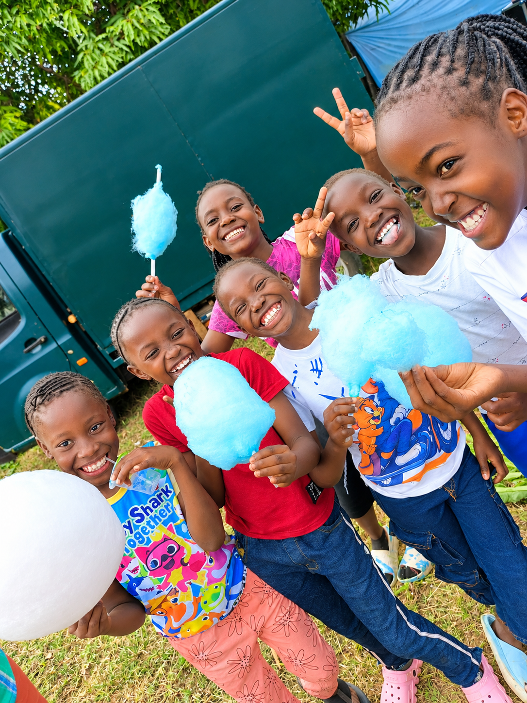
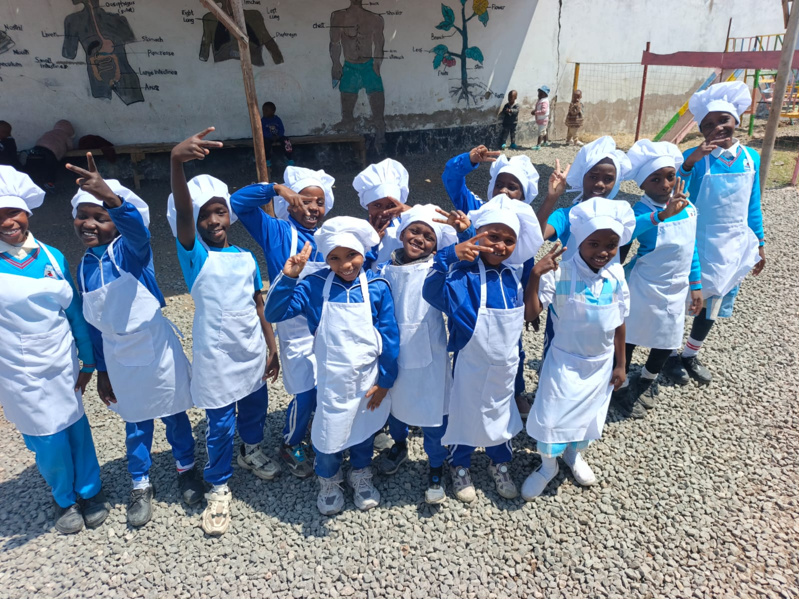
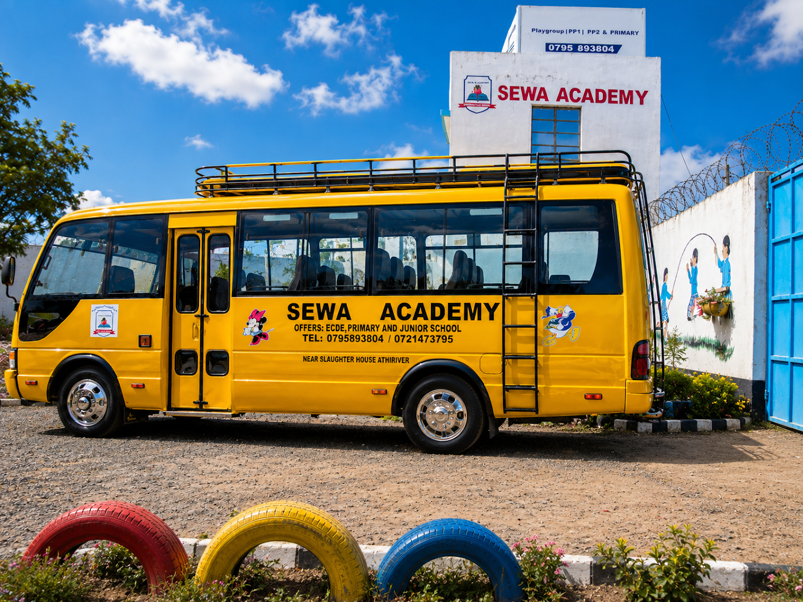

Academic Excellence
Rigorous CBC-aligned curriculum with qualified teachers, modern resources, and personalized attention so every student can reach their potential.





Sewa Academy Kenya offers holistic, Christian-aligned education for Play Group through Senior Secondary — building excellence, creativity, and character in every child.
A Christian-aligned school in Slota, Athi River, building excellence in every child.
Sewa Academy Kenya is a private, Christian-aligned educational institution located in Slota, Athi River, Machakos County. We serve learners from Play Group through Junior Secondary, combining rigorous academics with character formation rooted in Christian values of integrity, respect, and service.
Families choose us for small, attentive classes, a warm community, and a clear pathway from the earliest years of learning through Senior secondary preparation.
From early play to Senior secondary, each level is designed with care, structure, and purpose.
A warm, nurturing start for early learners with guided play, storytelling, basic numeracy, and social skills in a Christian environment.
Foundational learning blending play and structured activity. Focus on literacy, early mathematics, creativity, and character building.
Strong CBC-aligned academics with emphasis on critical thinking, reading, science, ICT basics, and moral development.
Preparation for senior secondary with deeper subject mastery, leadership development, and guided career exploration.
Advanced academic learning, career pathway preparation, leadership development, and focused preparation for higher education and future careers.
Holistic education that nurtures the mind, character, creativity, and spirit.
Rigorous CBC-aligned curriculum with qualified teachers, modern resources, and personalized attention so every student can reach their potential.
Christian values of integrity, respect, and service are woven into daily life, helping students grow into ethical, compassionate leaders.
Arts, music, drama, sports, and clubs give students room to explore talents, build confidence, and work as a team.
Beyond the classroom — Quality Education, holiday camps, and co-curricular enrichment.
Grades 1 – 7
We focus on strong foundations, curiosity, confidence, and practical skills so every learner can grow and prepare for the next stage of learning.
Learn more All Ages
All Ages
Educational school trips and tours that give students opportunities to explore new places, learn beyond the classroom, and build teamwork, confidence, and lasting memories.
Learn more All Levels
All Levels
Arts, music, drama, and sports integrated into the curriculum to nurture talent, teamwork, and healthy confidence.
Learn moreA balanced school experience focused on academic growth, character, confidence and a strong sense of community.
Structured learning from Play Group through Junior Secondary, with attention to understanding and steady progress.
We nurture respect, responsibility, integrity, teamwork and positive relationships alongside classroom learning.
School transport is available for families in Athi River and surrounding areas. Contact the school to confirm current routes and charges.
Sports, arts, music, scouts, clubs, trips and outdoor activities give learners opportunities to discover and develop their talents.
Real school experiences help children build confidence, friendships and practical life skills.

Convenient school transport for families within Athi River and surrounding areas, subject to route and availability.
Opportunities for learners to participate, discover talents and build teamwork and confidence.
Educational and recreational experiences that connect learning with the wider world.
Life at Sewa Academy — classrooms, play, creativity, and community.
Slota, Athi River, Machakos County, Kenya
Phone / WhatsApp: +254 795 893 804 · Contact & enroll
Contact us today to learn more about enrollment, fees, and school visits.
Enroll / Contact Us